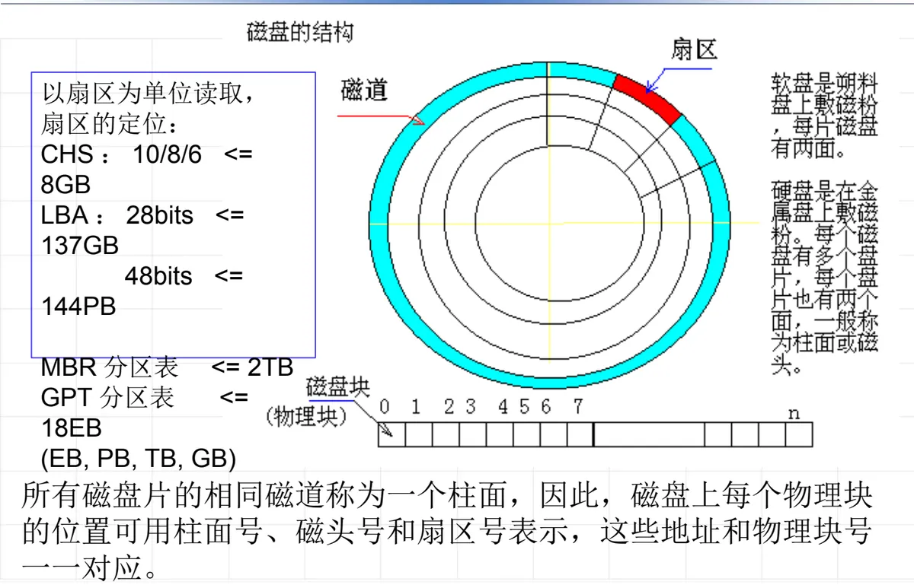
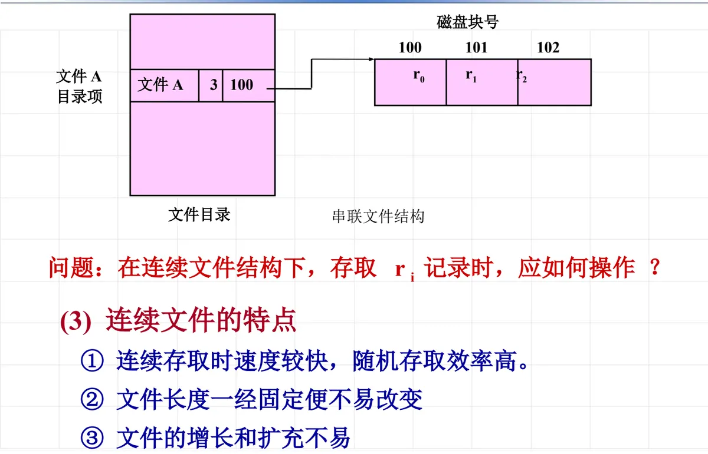
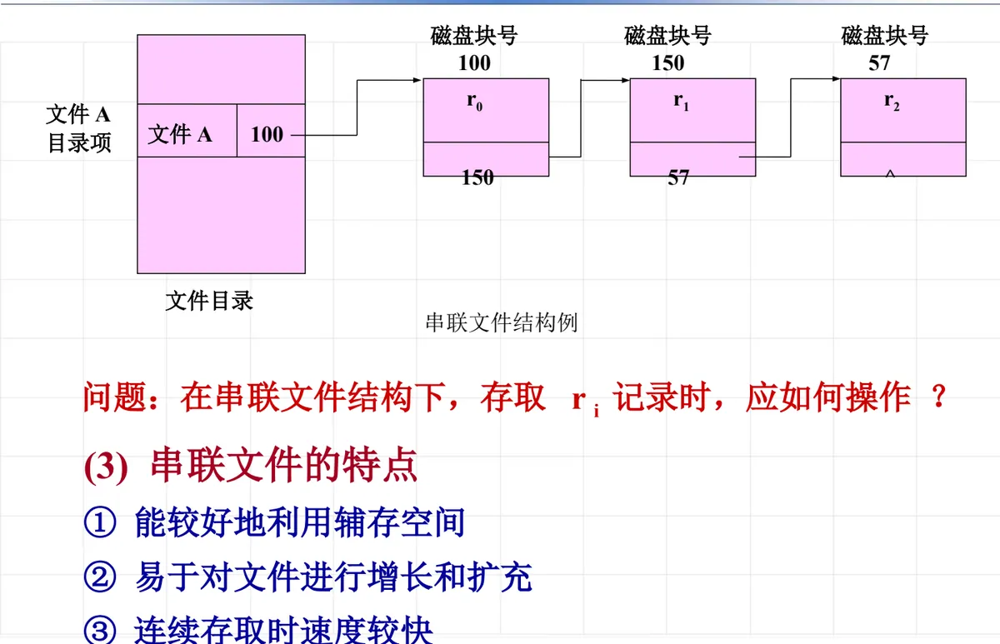
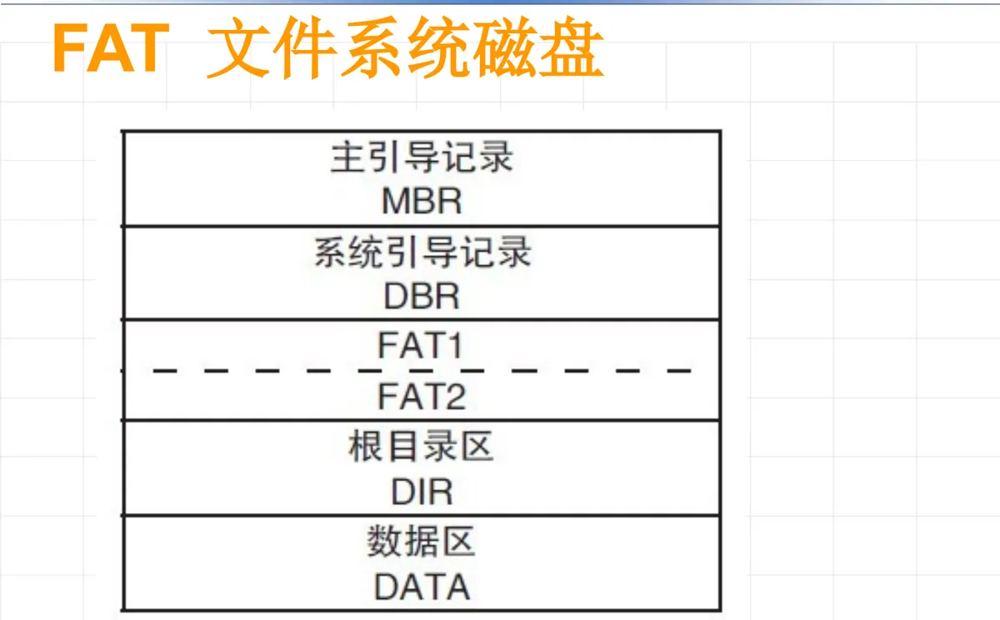
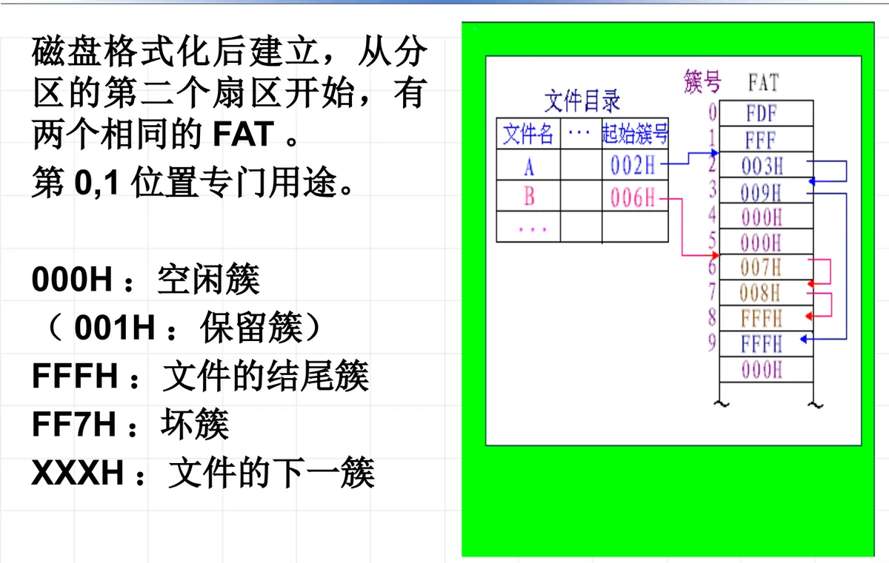
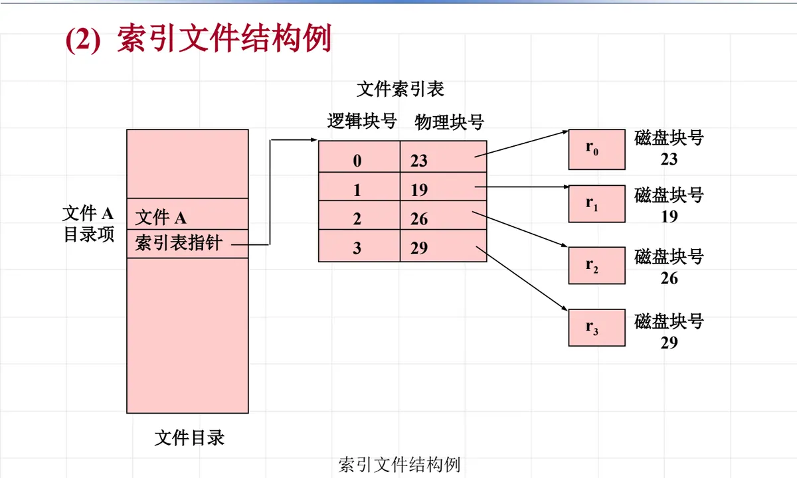
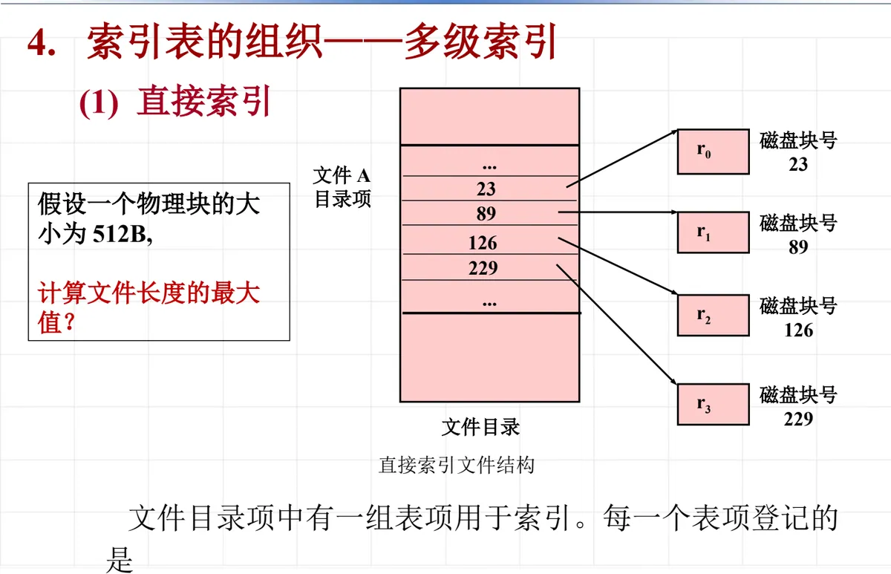
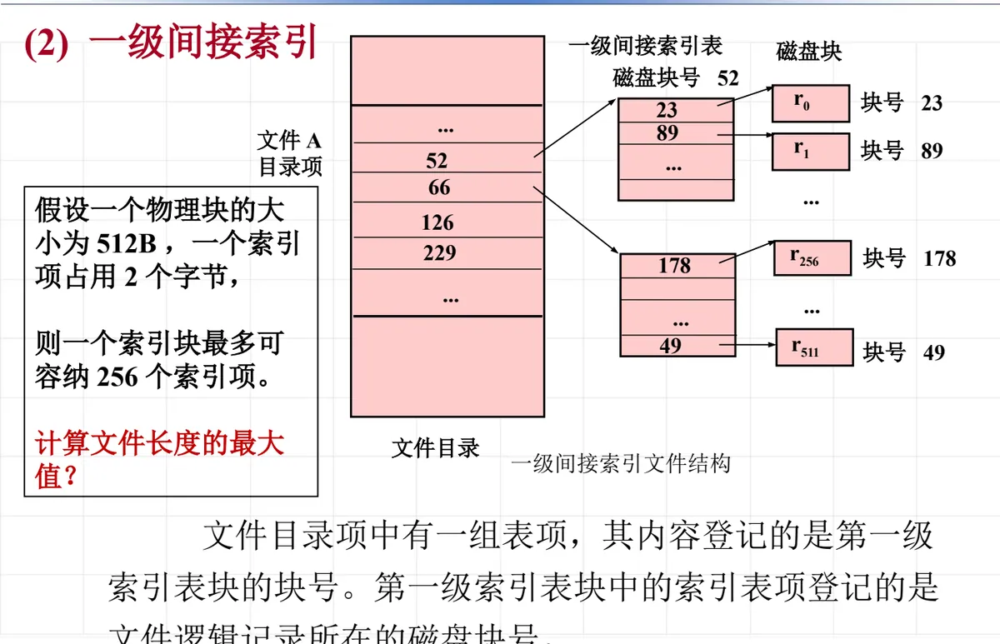
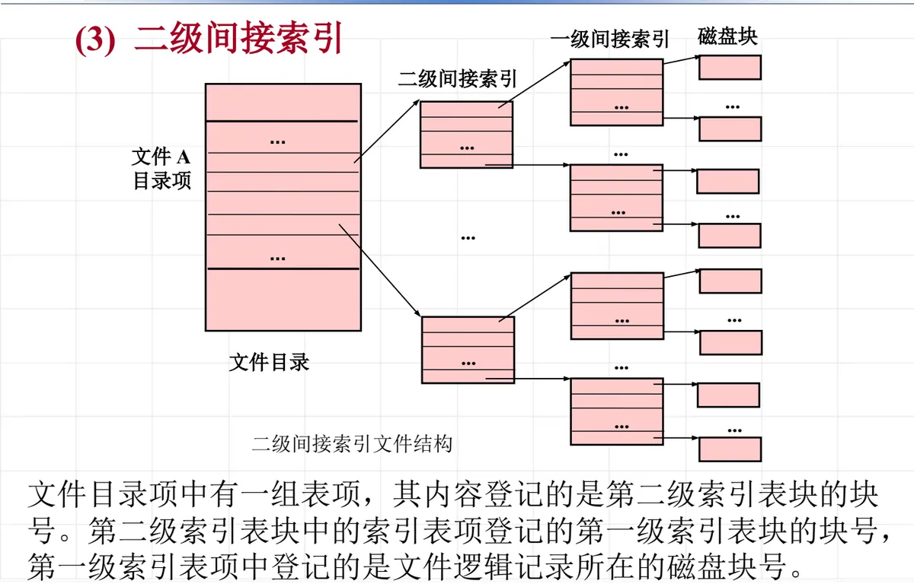
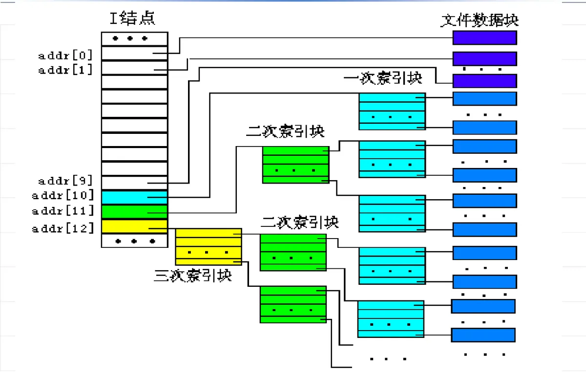

操作系统原理 · 第 9 章 文件系统
9.3 文件的物理结构
上一节讨论的是文件在用户眼里的样子——逻辑结构；这一节换到系统实现的视角，看文件的数据究竟以什么方式摆放在辅存上。先立起块与磁盘地址这两个基本概念，再依次考察三种经典的物理结构：连续文件、串联文件（以及它的改进形式文件映照与文件分配表 FAT）、索引文件，最后把三者放在一起比较。物理结构决定了文件能不能随机访问、存取一次要花多少次 I/O、以及辅存空间好不好利用。
1. 基本概念：块与磁盘地址
文件系统与辅存之间交换信息的最小单位是块（block），也叫物理记录：它是存储介质上一段连续信息所组成的区域。块是主存储器与辅助存储设备之间信息交换的物理单位，每次交换一块或整数块。
块的大小不能随便定，要综合考虑用户的使用方式、数据传输效率和存储设备的类型等多种因素。不同类型的存储介质，块的长短常常各不相同；同一类型的存储介质，块的长短也可以不同。此外，块与块之间还可能存在不记录信息的间隙。
（1）物理块的位置怎么表示
磁盘上所有盘片的相同磁道组成一个柱面。因此，磁盘上每个物理块的位置都可以用柱面号、磁头号、扇区号这三个坐标表示出来，这些地址与物理块号一一对应——上层软件只要拿着块号，就能换算出它在磁盘上的确切位置。
磁盘以扇区为单位读写，扇区的定位方式随着容量增长不断演进：早期用 CHS 寻址（10 位柱面号、8 位磁头号、6 位扇区号，可寻址约 8 GB），后来改用 LBA 线性地址，28 位可寻址约 137 GB，48 位可寻址约 144 PB。分区表的容量上限也随之变化：MBR 分区表最大约 2 TB，GPT 分区表可达约 18 EB（容量单位由小到大为 GB、TB、PB、EB，相邻两级相差 1024 倍）。

概括地说，文件的物理结构描述了文件在辅存上安置、链接和编目的方法。常用的文件物理结构有三种：连续文件、串联文件、索引文件——它们依次回答了「块怎么排、怎么串、怎么查」这三个问题，下面逐一来看。
2. 连续文件
连续文件结构由一组分配在磁盘连续区域的物理块组成——文件占哪些块是连成一片的，文件目录项里只要记下首块号和文件长度就够了。
课件给的例子是：文件 A 有三个逻辑记录 r0、r1、r2，逻辑记录与物理块大小相等，都是 512 B，其中 r0 存放在第 100 号磁盘块上。由于块是连续分配的，三个记录分别落在 100、101、102 三个块上，目录项中记录首块号 100 与记录个数 3。
在这种结构下存取第 i 个记录 ri 很方便：由目录项得到首块号，用「首块号 + i」即可算出目标块号，再做一次 I/O 把该块读入主存就行。也就是说，无论顺着读还是跳着随机读，都能一次定位到目标块，不必经过中间的块。

（1）连续文件的特点
- 连续存取时速度较快，随机存取效率高；
- 文件长度一经固定便不易改变；
- 文件的增长和扩充不易。
3. 串联文件
串联文件结构按顺序由串联的块组成：文件的信息存放在若干物理块中，每个物理块的最末一个字作为链接字，它指出后继块的物理地址；文件最后一块的链接字为结束标记「^」，表示文件到本块结束。目录项里只需要记录文件的首块号。
课件给出的例子是：文件 A 的目录项登记首块号 100；100 号块的链接字指向 150，150 号块的链接字指向 57，57 号块是最后一块，链接字为「^」。于是文件的数据块顺序是 r0 在 100 号、r1 在 150 号、r2 在 57 号——它们在磁盘上并不连续。
要存取第 i 个记录 ri，问题就来了：目录里只有首块号，目标块的位置藏在链上，只能从首块开始沿着链接字逐块读下去，读到第 i 个记录要经历 i+1 次 I/O，无法直接跳到目标块。这正是串联文件不适合随机访问的根本原因。

（1）串联文件的特点
- 能较好地利用辅存空间；
- 易于对文件进行增长和扩充；
- 连续存取时速度较快。
4. 文件映照与文件分配表 FAT
串联文件最大的毛病是存取效率低：链接字散落在各个数据块里，为了找到一个块，不得不把链上前面的块统统读一遍。改进的思路是文件映照：把链接文件中的链接字集中到一个结构中，这样既保持了链接文件空间利用好、易于扩充的优点，也克服了它的缺点。DOS、Windows 采用的就是这种结构，它的具体形式就是文件分配表 FAT（File Allocation Table）。
FAT 是以链接方式存储文件的系统中，用来记录磁盘分配情况、跟踪空闲块（簇）的数据结构。它在文件系统格式化后建立，表的序号就是簇号，从 0 一直到 N−1（N 为簇的总数），每个表项的内容是存放文件数据的下一个簇号；文件的首地址（第一个簇号）记在目录中。这样一来，只要从目录里拿到首簇号，顺着 FAT 查下去就能得到文件在磁盘上的全部存放地址，不必再读数据块去取链接字——链还在，但「链」已经集中到一张表里了。
FAT 有两个相同的副本，从分区的第二个扇区开始；表中第 0、1 两项留作专门用途。表项的取值有约定的含义：
| 表项取值 | 含义 |
|---|---|
| 000H | 空闲簇 |
| 001H | 保留簇 |
| FFFH | 文件的结尾簇（链到此结束） |
| FF7H | 坏簇 |
| XXXH | 文件的下一簇 |


5. 索引文件
无论连续文件还是串联文件，都没有同时处理好「空间利用」与「随机访问」这对矛盾：连续文件能随机访问，但要求成片的连续空间、且不易扩充；串联文件空间利用好、易扩充，却只能顺链找块。索引文件的思路是把数据和「块号对照关系」分开存放：把逻辑文件顺序地划分成长度与物理存储块长度相同的逻辑块，为每个文件分别建立一张「逻辑块号 → 物理块号」的对照表，这张表称为该文件的索引表；文件由数据和索引表两部分构成，这样构造的文件称为索引文件。
课件给出的例子是：文件 A 的索引表把逻辑块 0、1、2、3 分别映射到物理块 23、19、26、29；文件目录项中存放的不是数据块号，而是索引表指针，指向索引表所在的块。数据块则散布在磁盘各处，彼此不需要连续，也不需要在块内留链接字。
索引文件在存储区中占两个区：索引区存放索引表，数据区存放文件数据。相应地，访问一个记录要分两步：先查文件索引，由逻辑块号查得物理块号；再由这个物理块号读入所要求的信息。

（1）索引文件的特点
- 可以直接读写任意记录，随机访问方便；
- 易于文件的增删。
6. 索引表的组织：直接索引与多级索引
索引文件把「随机访问」这件事解决了，但索引表本身也要占空间：文件越大，索引表越长。于是索引表也不是只有一种组织方式——它可以放在目录项里直接使用，也可以本身再分块、分级，由此形成直接索引与多级索引。
（1）直接索引
文件目录项中直接放一组表项，每一个表项登记的是某个逻辑记录所在的磁盘块号。设一个物理块的大小为 512 B，若目录项中有 n 个这样的表项，那么直接索引能表示的文件长度最大就是 n × 512 B——文件长度的上限由目录项中能容纳的表项数决定。

（2）一级间接索引
目录项中的表项不再直接登记数据块号，而是登记第一级索引表块的块号；第一级索引表块中的表项，才登记文件逻辑记录所在的磁盘块号。这样目录项本身不必很长，索引表却能随文件增大而增大。
课件给了一个可估算的例子：设一个物理块的大小为 512 B、一个索引项占 2 个字节，则一个索引块最多可容纳 256 个索引项，也就是能指向 256 个数据块，覆盖 256 × 512 B = 128 KB 的文件数据。目录项里若有 k 个这样的表项，文件长度上限就是 k × 128 KB；课件示例中目录项有两个这样的表项（分别覆盖 r0–r255 与 r256–r511），文件可长达 256 KB。

（3）二级间接索引
再进一层：目录项中的表项登记的是第二级索引表块的块号，第二级索引表块中的表项登记第一级索引表块的块号，第一级索引表项中登记的才是文件逻辑记录所在的磁盘块号。每多一级，索引能覆盖的范围就成倍扩大，代价是访问一个记录要多读一次索引块。

7. 几种文件物理结构的比较
把三种结构放在一起看，各自的取舍非常清楚。
- 连续文件：优点是不需要额外的空间开销，只要在文件目录中指出文件的大小和首块的块号即可，对顺序的访问效率很高，适应于顺序存取和随机存取。缺点是动态地增长和缩小系统开销很大；文件创建时要求用户提供文件的大小；存储空间浪费较大。
- 串联文件：克服了连续文件的不足之处，但文件的随机访问系统开销较大，适应于顺序访问的文件。
- 索引文件：既适应于顺序访问，也适应于随机访问，是一种比较好的文件物理结构；但要有用于索引表的空间开销和文件索引的时间开销，因此要考虑如何有效地存储和访问索引表。UNIX 文件系统是使用索引结构的成功例子。
| 物理结构 | 额外空间开销 | 随机访问 | 增长与扩充 | 适用场合 |
|---|---|---|---|---|
| 连续文件 | 无（目录项记首块号与文件大小） | 效率高，一次定位 | 开销很大，创建时须给出文件大小 | 顺序存取与随机存取 |
| 串联文件 | 每个数据块的最末一个字作链接字 | 须顺链逐块读，开销大 | 容易 | 顺序访问的文件 |
| 索引文件 | 索引表的空间开销 | 查索引得物理块号，方便 | 容易，增删方便 | 顺序访问与随机访问都可以 |

本节小结
- 块（物理记录）是主存与辅存交换信息的物理单位，块的大小要兼顾使用方式、传输效率与设备类型；物理块的位置由柱面号、磁头号、扇区号表示，与块号一一对应。
- 连续文件把文件放在成片的连续块里，目录项只要首块号和长度，随机访问最快，但长度固定、增长扩充困难、空间浪费大。
- 串联文件用每个块末尾的链接字串起文件，空间利用好、易扩充，但只能顺链查找，读第 i 个记录要 i+1 次 I/O，不适合随机访问。
- 文件映照把链接字从数据块里集中到一张表中，就是 DOS/Windows 的文件分配表 FAT：表项登记下一个簇号，目录项里的首簇号是查找的起点。
- 索引文件为每个文件建立索引表（逻辑块号 → 物理块号），访问分「查索引、读数据」两步，随机访问与增删都方便；索引表本身可以按块分级，形成直接索引、一级间接索引和二级间接索引，文件长度上限随之成倍扩大。
- 三种结构没有绝对优劣：连续文件胜在速度，串联文件胜在空间与扩充，索引文件胜在随机访问——UNIX 文件系统用的就是索引结构。下一节要讲的存储空间管理，解决的正是这些结构下「空闲块怎么找、怎么分配」的问题。